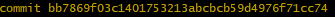
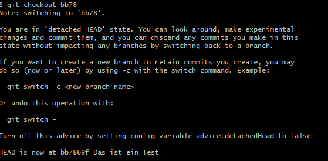
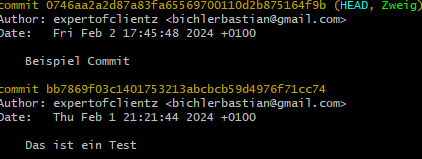

Git ist ein verteiltes Versionskontrollsystem, das von Linus Torvalds entwickelt wurde. Es wird verwendet, um den Entwicklungsprozess von Softwareprojekten zu verwalten und bietet die Möglichkeit, Änderungen an Quellcode und anderen Dateien zu verfolgen.
1. Grundkonzepte
Git basiert auf mehreren grundlegenden Konzepten:
-
Repositorium (Repository): Ein Verzeichnis, das alle Dateien, Historie und Konfigurationen für ein Projekt enthält.
-
Commit: Eine Sammlung von Änderungen, die zu einem bestimmten Zeitpunkt an einem Projekt vorgenommen wurden. Commits sind die grundlegenden Bausteine der Versionskontrolle.
-
Branch (Zweig): Ein isolierter Entwicklungszweig, der es ermöglicht, unabhängig an bestimmten Funktionen oder Verbesserungen zu arbeiten, ohne die Hauptentwicklung zu beeinträchtigen.
-
Merge: Das Zusammenführen von Änderungen aus einem Branch in einen anderen, um die Entwicklungen zu kombinieren.
-
Pull Request: Ein Vorschlag zur Zusammenführung von Änderungen, der von einem Entwickler erstellt wird, um Code in den Hauptentwicklungszweig zu integrieren.
2. Installation
2.1. Windows
Um Git auf Windows zu installieren muss folgendes Installiert Git for Windows Downloaden.
Nachdem das Programm erfolgreich installiert wurde, steht Ihnen eine Auswahl an Kommandozeileninterpretern zur Verfügung. Sie sind nicht auf die Nutzung der Eingabeaufforderung oder der Windows PowerShell beschränkt. Darüber hinaus werden zwei eigene Kommandozeileninterpreter mitgeliefert, die Sie im Startmenü im Ordner „Git“ finden können: Git Bash und Git CMD.
Besonders interessant ist die Git Bash, da sie ähnliche Eigenschaften wie das Linux-Terminal aufweist. Dies kann in bestimmten Situationen Vorteile bieten. Beachten Sie jedoch, dass für die meisten Aufgaben auch die vorinstallierten Windows-Kommandozeileninterpreter verwendet werden können. Die Entscheidung darüber, welche der vorgestellten Alternativen Sie bevorzugen, liegt letztendlich bei Ihnen.
2.2. Linux
Bei Linux kann es sein dass git schon installiert ist. Schaue dazu nach Unten Prüfen auf erfolgreich.
Wenn dies nicht der fall ist, werden folgende Befehle benötigt:
apt install git-all2.3. Prüfen auf erfolgreich
Um zu Überprüfen ob die Installation erfolgreich war, öffne eine Kommandozeile und gib folgendes ein:
git --version3. Grundlegende Konfiguration
Git bietet zahlreiche Konfigurationsmöglichkeiten, um die Software an individuelle Anforderungen anzupassen. Die meisten dieser Konfigurationen sind optional, können jedoch zur Verbesserung der Arbeitsabläufe genutzt werden. Es gibt jedoch auch einige Einstellungen, die zwingend erforderlich sind, um sinnvoll mit Git zu arbeiten. Dazu gehört insbesondere die Angabe von Name und E-Mail-Adresse.
3.1. Verschiedene Möglichkeiten für die Konfiguration
Um Git zu konfigurieren, stehen verschiedene Methoden zur Verfügung. Die Konfigurationen werden in zwei unterschiedlichen Dateien gespeichert. Eine befindet sich im Installationsverzeichnis von Git, typischerweise unter "Lokaler Datenträger (C:) > Programme > Git" oder über den Kommandozeileninterpreter mit dem Pfad "C:\Programs\Git". Diese Datei trägt den Namen gitconfig.
Die zweite Konfigurationsdatei liegt im Home-Verzeichnis und ist normalerweise als versteckte Datei .gitconfig im Benutzerordner zu finden. Beachten Sie, dass versteckte Dateien im Windows Explorer standardmäßig nicht angezeigt werden. Sie können dies in den Ordneroptionen der Systemsteuerung ändern.
Hinweis: Die genannten Speicherorte beziehen sich auf das Betriebssystem Windows. Unter Linux und macOS gibt es Abweichungen, aber die Dateien sind über die Suchfunktion leicht zu finden.
Um die Konfiguration manuell vorzunehmen, können Sie die Dateien mit einem Texteditor öffnen, doch dies ist kompliziert und fehleranfällig. Eine einfachere Alternative ist die Konfiguration über die Kommandozeile, wodurch Git die Werte automatisch in den Konfigurationsdateien speichert.
Wenn man alleine an den Projekt arbeiten kann man diesen Schritt vernachlässigen ist aber nie schlecht es zu machen.
Um nun den Namen und die Email adresse zu ändern verwenden wir folgenden Befehl:
git config --global user.name "Max Mustermann"
# und
git confi g --global user.email meinemail@beispiel.deDies gilt nun für alle Projekte die mit Git verwaltet werden. Später erfahren wir wie wir dies für einzelne Projekte ändern können.
3.2. Weitere Konfigarationen möglichkeiten
Eine Möglichkeit besteht es mit einen Texteditor zu ändern dies können wir mit "Geany" machen oder mit einen Belieben anderen.
git confi g --global core.editor geanyBei einen anderen einfach den Namen austauschen mit dem er in der Umgebungsvariable gespeichert ist.
Eine weitere Konfigurationsmöglichkeit besteht darin, den Namen des Hauptzweigs vorzugeben. Jeder Zweig, den Sie im Rahmen eines Projekts erzeugen, benötigt einen Namen. Dabei ist insbesondere der Hauptzweig von Bedeutung. Dieser erhält beim Erstellen eines neuen Projekts automatisch einen Namen. Gemäß den Standardeinstellungen lautet die Bezeichnung hierfür master. Allerdings können Sie hierfür auch andere Vorgaben machen.
Um den Namen des Hauptzweigs zu ändern, verwenden Sie den folgenden Befehl:
git config --global init.defaultBranch neuer_hauptzweig_nameErsetzen Sie "neuer_hauptzweig_name" durch den gewünschten Namen für den Hauptzweig. Beachten Sie, dass dies vor allem in Umgebungen relevant ist, in denen der Begriff master durch andere Bezeichnungen wie main ersetzt wird.
Auch auf die optische Gestaltung können Sie Einfl uss nehmen. Beispielsweise gestaltet Git normalerweise die Ausgaben des Programms farbig. Wenn Sie eine schlichte Darstellung ohne Farben vorziehen, erreichen Sie dies mit dem folgenden Befehl:
git confi g --global color.ui falseDie zuvor genannten Konfigurationsmöglichkeiten stellen nur eine kleine Auswahl der Optionen für Git dar. In den meisten Fällen ist es für Anfänger nicht notwendig, weitere Änderungen vorzunehmen. Die Einstellung der Identität und gegebenenfalls des verwendeten Texteditors sind in der Regel ausreichend.
Wenn Sie jedoch im Verlauf Ihrer Arbeit mit Git zusätzliche Details entdecken, die Sie konfigurieren möchten, können Sie dies jederzeit tun. Im weiteren Verlauf des Buchs werden wir einige weitere Konfigurationsmöglichkeiten vorstellen. Für einen umfassenden Überblick über alle Konfigurationsoptionen empfehlen wir einen Besuch der offiziellen Dokumentation unter dem folgenden Link:
link:https://git-scm.com/docs/git-config
3.3. Kofig Prüfen
Um die Konfig zu prüfen können wir folgenden Befehl verwenden:
git confi g --list4. Git Hilfe
Die git Hilfe ist abunzu sehr Praktisch zu verwenden. Diese Kann uns Auskunft über einen Bestimmten Befehl geben. Nachteil hier ist das der Befehl bekannt sein muss anhand hier des config Befehls.
git help config
git config --help
man git-config
git config -hEine Alternative ist die Git Hilfe im Internet zu verwenden. Diese ist unter folgenden Link zu finden: https://git-scm.com/
5. Die Grundlagen Arbeit mit Git
Nach dem Configurieren der Git Umgebung können wir nun mit der Arbeit beginnen. Hierbei handelt es sich um die Basis Funktionen die wir benötigen um mit Git zu arbeiten.
6. Das Git Repository ⇒ Ausgang für die Verwendung
Um mit Git zu arbeiten benötigen wir ein Repository. Dieses ist ein Verzeichnis in dem Git die Dateien und die Historie speichert. Dort werden alle Änderungen und frühere Versionen der Dateien gespeichert.
Es gibt 2 Arten um Repositorys zu erstellen.
6.1. Local
Um ein Repository anzulegen, müssen Sie zunächst ein eigenes Verzeichnis erstellen. Dies können Sie entweder über die grafische Benutzeroberfläche Ihres Betriebssystems tun oder, wie im folgenden Beispiel beschrieben, über den Kommandozeileninterpreter.
Öffnen Sie den Kommandozeileninterpreter und verwenden Sie den mkdir-Befehl, gefolgt vom Namen, den Sie dem Ordner geben möchten. In diesem Beispiel nennen wir den Ordner "git-beispiel". Anschließend wechseln Sie in diesen neuen Ordner mit dem cd-Befehl, ebenfalls gefolgt vom Namen des Ordners. Die Abbildung 3.1 veranschaulicht diesen Vorgang.
mkdir git-beispiel
cd git-beispielNachdem Sie sich im entsprechenden Verzeichnis befinden, geben Sie den Befehl git init ein. Dieser Befehl erstellt ein neues Repository, das zu Beginn leer ist. Es ist jedoch sinnvoll, sich den Inhalt des Ordners trotzdem anzeigen zu lassen. Hierfür können Sie den Befehl dir verwenden. Unter Linux oder macOS können Sie alternativ den Befehl ls eingeben, der zu einem ähnlichen Ergebnis führt.
git init
dir6.2. Repository klonen
Oft wird Git verwendet, um an einem bereits bestehenden Projekt teilzunehmen. Insbesondere bei der beruflichen Nutzung von Git wird es wahrscheinlich sein, dass Sie zu Beginn nicht selbst für die Erstellung von Repositories verantwortlich sind. In solchen Fällen müssen Sie ein existierendes Repository klonen.
Um das Repository zu klonen, verwenden Sie den Befehl git clone gefolgt von dem Link zum Repository. Hier ist ein Beispiel:
git clone link/dateiHier wird dann der Ganze Ordner geklont sowie alle Dateien die sich darin befinden und jüngeren Versionen.
6.3. Repositorys hinzufügen
Nach den wir das Repository erstellt ist, könne mir beginnen Dateien hinzuzufügen.
Es ist von entscheidender Bedeutung, den Status eines Git-Repositorys zu überprüfen, um Informationen über die enthaltenen Dateien sowie mögliche Aktionen zu erhalten.
Bevor Sie den Status abfragen, wechseln Sie bitte in das Verzeichnis, in dem sich Ihr Repository befindet. Angenommen, es handelt sich um ein lokal erstelltes Repository ohne vorhandene Dateien. Geben Sie den Befehl git status ein. Die Ausgabe wird unter anderem den Eintrag „No commits yet” anzeigen, was darauf hinweist, dass das Repository noch leer ist. Ebenso wird der Eintrag „nothing to commit” erscheinen, was bedeutet, dass keine Dateien vorhanden sind, die Sie dem Repository hinzufügen könnten.
Nachdem Sie den Status für ein leeres lokales Repository abgefragt haben, können Sie in das Verzeichnis wechseln, in dem sich das zuvor geklonte Repository aus dem vorherigen Kapitel befindet. Wenn Sie hier erneut den Status abfragen, wird die Anzeige „Your branch is up to date” erscheinen. Dies deutet darauf hin, dass das Repository bereits Inhalte enthält, die jedoch auf dem neuesten Stand sind. Somit sind keine weiteren Maßnahmen erforderlich.
6.4. Dateien zum Repository aus
Im nächsten Schritt fügen wir eine Datei zum Repository hinzu. Sie können hierfür eine Textdatei mit beliebigem Inhalt erstellen und diese unter dem Namen "beispiel.txt" in einem der Ordner speichern, in dem Sie ein Repository erstellt haben. In unserem Beispiel verwenden wir das lokal erstellte Repository, aber Sie können die gleichen Aktionen auch problemlos im geklonten Repository durchführen.
Nachdem Sie die Datei erstellt und im Repository-Ordner abgespeichert haben, ist zu beachten, dass sie zwar im Ordner des Repositorys vorhanden ist, jedoch noch nicht Teil des Repositorys ist. Wenn Sie den Status erneut abfragen, wird die Datei angezeigt, aber als „untracked file” beschrieben. Das bedeutet, dass ihre Versionen nicht erfasst werden. Dies wird deutlich, wenn Sie die Änderungen am Repository verfolgen. Hierfür verwenden Sie den Befehl git add gefolgt vom Namen der Datei. In unserem Beispiel lautet der Befehl wie folgt:
git add datei
#folgendes erscheit dann mit status
No commits yet
Changes to be committed:
(use "git rm --cached <file>..." to unstage)
new file: beispiel.txtJetzt wenn mehere Datein erstellt werden würde müsste man jeder Datei einzel erfassen dies kann aber mit folgenden Befehl umgangen werden.
git add --allUm das gesamte Projekt zum Repository hinzuzufügen, wechseln Sie in das Hauptverzeichnis (mein-projekt) und führen Sie den Befehl git add . aus. Damit werden alle Dateien und Unterverzeichnisse im aktuellen Verzeichnis sowie deren Inhalte dem Repository hinzugefügt.
6.5. Commits durchführen
Die Integration einer neuen Datei in ein Git-Repository ist ein zweistufiger Prozess. Durch den add-Befehl haben wir die Datei bereits dem Repository hinzugefügt, aber die aktuelle Version wurde noch nicht im Verlauf festgehalten. Hier kommt der Befehl git commit ins Spiel.
Der git commit-Befehl speichert alle zuvor mit git add dem Repository hinzugefügten Dateien in ihrer aktuellen Version ab. Beim Ausführen des Befehls öffnet sich der zuvor in Kapitel 2.3 konfigurierte Texteditor. Beachten Sie, dass Probleme auftreten können, wenn der Texteditor bereits geöffnet ist. Daher ist es ratsam, ihn vor der Ausführung des commit-Befehls zu schließen.
Die Datei, die sich öffnet, ist die sogenannte Commit-Nachricht. Hier können Sie eine kurze Beschreibung Ihres Commits eingeben, wie z. B. die betroffenen Dateien und die durchgeführten Änderungen. Wenn die Datei geöffnet wird, enthält sie bereits Text, einschließlich Informationen zu den betroffenen Dateien. Diese Informationen sind jedoch durch das Rautezeichen am Anfang der Zeile als Kommentar markiert und werden von Git ignoriert. Wenn Sie sie übernehmen möchten, entfernen Sie das Rautezeichen. Sie können auch beliebigen anderen Text als Nachricht einfügen. Beachten Sie, dass die Datei nicht leer bleiben darf, da ohne eine Nachricht kein Commit möglich ist. Kommentare werden ignoriert, daher wird die Datei mit dem ursprünglichen Text ebenfalls als leer betrachtet. Es ist daher erforderlich, mindestens eine Textzeile ohne Rautezeichen hinzuzufügen.
Beispiel:
# Bitte geben Sie eine Commit-Nachricht ein
Hinzufügen der neuen Funktion und Aktualisierung des bestehenden Projekts.
- Neue Funktion in neue-funktion.py implementiert.
- Aktualisierungen in bestehendes-projekt.py vorgenommen.Nachdem Sie die Datei angepasst haben, speichern Sie die Änderungen und schließen Sie den Texteditor. Wenn Sie dann zum Kommandozeileninterpreter zurückkehren, erhalten Sie eine Meldung, die bestätigt, dass der Commit erfolgreich durchgeführt wurde.
Die Verwendung des Texteditors für die Commit-Nachricht kann als umständlich empfunden werden. Wenn Sie lediglich eine kurze Nachricht eingeben möchten, ist es praktischer, dies direkt beim commit-Befehl anzugeben. Hierzu fügen Sie nach dem commit-Befehl den Ausdruck -m ein und können dann die gewünschte Nachricht in Anführungszeichen setzen. Zum Beispiel:
git commit -m "Hinzufügen neuer Funktionen und Aktualisierung des bestehenden Projekts."6.6. Dateien updaten verändern löschen
Im vorherigen Kapitel haben wir eine neue Datei dem Repository hinzugefügt und einen Commit erstellt, um ihre aktuelle Version zu erfassen. Der normale Arbeitsprozess besteht jedoch darin, an dieser Datei weiterzuarbeiten, und Git soll diese Änderungen verfolgen sowie alle erforderlichen Informationen speichern. In diesem Kapitel erfahren Sie, wie Sie dabei vorgehen und lernen, Dateien zu löschen und umzubenennen.
Um zu zeigen, wie Sie dabei vorgehen können, müssen wir zunächst eine Änderung an einer Datei vornehmen. Öffnen Sie dazu eine der Dateien, die Teil unseres Repositorys sind, mit einem Texteditor – nehmen wir beispielsweise die Datei "beispiel.txt". Nehmen Sie nun eine beliebige Änderung vor, beispielsweise indem Sie eine zusätzliche Textzeile einfügen. Speichern Sie die Datei und schließen Sie den Texteditor.
Rufen Sie anschließend erneut den Status des Repositorys ab. Erkennt Git automatisch, dass eine Änderung an der Datei vorgenommen wurde. Allerdings erscheint auch die Meldung „no changes added to commit”, was bedeutet, dass die veränderte Datei noch nicht für einen neuen Commit vorbereitet ist.
Jetzt ist es erforderlich, die vorgenommene Änderung an der Datei mit dem add-Befehl für den Commit vorzubereiten. Dieser Schritt wird als Überführung in die sogenannte "Staging-Area" bezeichnet. In der Staging-Area befinden sich alle Dateien, die für einen Commit vorbereitet sind. Nachdem wir erneut den Status abgefragt haben, sehen wir, dass die Datei nun für einen Commit bereit ist. Diesen können wir anschließend durchführen.
Um den Arbeitszyklus bei der Änderung eines Dokuments zu beschleunigen, können Sie auch den Befehl git commit -a verwenden. Dieser kombiniert die Funktionen des commit-Befehls mit denen des add-Befehls. Das bedeutet, dass Sie das Repository nach einer Veränderung mit nur einem Befehl aktualisieren können. Dieser wirkt sich außerdem auf alle Dateien aus, an denen Sie eine Änderung vorgenommen haben. Um dies zu verdeutlichen, nehmen wir nun eine Veränderung an zwei Dateien vor – an "beispiel.txt" und "beispiel2.txt". Auch hierbei ist es wieder möglich, den Zusatz -m zu verwenden, um die Commit-Nachricht direkt einzufügen.
|
Important
|
Beachten Sie: Der Befehl |
6.7. Änderungen zwischen add und commit
Wenn Sie die Änderungen nicht mit dem Befehl git commit -a kombinieren und stattdessen einzeln mit git add und git commit durchführen, besteht die Möglichkeit, dass Sie die Datei nach der Ausführung des add-Befehls, aber vor dem Commit, erneut verändern. Um Fehler bei der Arbeit mit Git zu vermeiden, ist es sinnvoll, diesen Sonderfall ebenfalls zu berücksichtigen.

Wenn eine Datei zweimal erscheint, kann dies verwirrend sein. Es ist wichtig zu verstehen, dass es sich um zwei verschiedene Versionen der gleichen Datei handelt. Wenn Sie eine Datei mit dem add-Befehl in die Staging-Area verschieben, wird der aktuelle Bearbeitungsstand festgehalten, so wie er zum Zeitpunkt der Ausführung dieses Befehls ist. Weitere Änderungen werden in der Staging-Area nicht berücksichtigt. Daher wird eine nachträgliche Änderung als neue Version aufgeführt. Wenn Sie nun einen Commit durchführen, wird die Datei in der Staging-Area ins Repository übernommen – also nicht die letzte Änderung. Um die aktuelle Version zu übernehmen und in einem Commit zu speichern, müssen Sie den add-Befehl erneut ausführen, bevor Sie den Commit durchführen.
6.8. Änderungen anzeigen lassen
Manchmal besteht die Herausforderung, dass zwischen einer Änderung an einer Datei und dem Commit viel Zeit verstreicht. In solchen Situationen kann es schwierig sein, sich genau daran zu erinnern, welche Maßnahmen durchgeführt wurden und ob man diese Änderungen tatsächlich übernehmen möchte. Um diese Entscheidung zu unterstützen, ist es hilfreich, sich die Unterschiede zwischen den einzelnen Versionen anzeigen zu lassen.
Hierfür bietet der Befehl git diff eine Lösung. Er zeigt an, welche Änderungen an den Dateien vorgenommen wurden, solange sich diese noch nicht in der Staging-Area befinden. Wenn die Änderungen an den Dateien angezeigt werden sollen, auf die bereits der add-Befehl angewendet wurde, kommt stattdessen der Befehl git diff --staged zum Einsatz.
Um die Verwendung vorzustellen, führen wir Änderungen an den Dateien "beispiel.txt" und "beispiel2.txt" durch. Auf die Datei "beispiel.txt" wenden wir dann den add-Befehl an. Anschließend testen wir die beiden Alternativen git diff und
6.9. Daten löschen
Oftmals stellt sich im Verlauf eines Projekts heraus, dass Sie eine bestimmte Datei nicht mehr benötigen. In solchen Fällen ist es sinnvoll, die Datei zu löschen. Es wäre jedoch ein Fehler, dies einfach durch Löschen im Dateiverzeichnis durchzuführen. Die Datei würde zwar entfernt, aber die zugehörigen Daten im Repository blieben erhalten. Daher ist es wichtig, Dateien in Git auf die korrekte Weise zu entfernen.
Hier können wir auch den Befehl
git rm datei
#lsöchen aus der Staging-Area
git rm -fDurch den Befehl wird sie im Ordner und im Git Repository gelöscht.
Manchmal ist es aber sinnvoll nur die Datei aus den Repository zu löschen um dies zu machen verwenden wir folgenden Befehl:
git rm --cached datei6.10. Dateien umbennen
Theoretisch könnten wir die Datei im Explorer Umbennen leider registriert das Git nicht und kann dann später auch nicht mehr frühere Versionen herstellen.
Um dies doch zu können, müssen wir den Befehl git mv verwenden. Dieser Befehl funktioniert ähnlich wie der mv-Befehl des Betriebssystems. Er erwartet zwei Argumente: den Namen der zu verschiebenden Datei und den Namen des neuen Speicherorts. Wenn Sie beispielsweise die Datei "beispiel.txt" in "beispiel2.txt" umbenennen möchten, verwenden Sie den folgenden Befehl:
git mv test.txt test2.txt7. Git Rückgängig machen
Um Git datei rückgänging zu machen gibt es den Befehl `git restore ` dieser Befehl kann aber nur für Dateien verwendet werden die noch nicht in der Staging-Area sind.
git restore franz_xaver.txtUm nun eine Datei die sich in der Staging-Area befindet rückgängig zu machen verwenden wir folgenden Befehl:
git restore --staged franz_xaver.txtStaging Area bedeutet das die Datei schon für den Commit vorbereitet ist. Hier wird die Datei wieder aus der Staging-Area entfernt.
|
Important
|
Desewegen muss hier dann nochmal der normale restore Befehl verwendet werden. |
8. Gits nachträglich ergänzen
Abunzu kommt es vor, dass bereits ein Commit durchgeführt wurde und später festgestellt wird das noch Änderungen gemacht werden müssen. Jetzt wäre es natürlich möglich einen neuen Commit zu erstellen aber dies ist nicht immer sinnvoll.
Dies würde die Übersichtlichkeit beeinträchtigen.
Um dies zu vermeiden gibt es den Befehl git commit --amend dieser Befehl fügt die Änderungen dem letzten Commit hinzu.
9. Verlauf der Commits anzeigen
Um den Verlauf der Commits anzeigen zu lassen verwenden wir folgenden Befehl:
git logDieser Befehl zeigt uns alle Commits an die wir gemacht haben.
Weitere Übergabeparameter
-
zahl ⇒ zeigt die letzen Commits bis zur zahl
-
-p // --patch ⇒ Übersichtlichere Darstellung
-
--stat ⇒ Dieser gibt an welche dateien geändert wurden und wie viele Zeilen
Filter Möglichkeiten
Filter |
Beschreibung |
Beispiel |
-S |
Sucht nach Zeichenkennten die Übergeben wurde |
git log -S "Zeichenkette" |
--author |
Sucht nach Commits von bestimmten Autoren |
git log --author="Max Mustermann" |
--before |
Sucht nach Commits die vor einen bestimmten Datum gemacht wurden |
git log --before="2021-01-01" |
--after |
Sucht nach Commits die nach einen bestimmten Datum gemacht wurden |
git log --after="2021-01-01" |
--util |
ist eine Option, die zusätzliche Informationen zum Commit anzeigt, z.B.:Datum gemacht wurden |
git log --until |
--since |
Sucht seit einem Zeitpunkt |
git log --since="2021-01-01" |
10. Frühere Versionen wiederherstellen
Zentrale Vorteile:
-
Schnelle und einfache Wiederherstellung früherer Versionen
-
Beheben von Fehlern aus früheren Bearbeitungsschritten.
Zwei Möglichkeiten:
Zurückkehren zu einer früheren Version: - Nachfolgende Änderungen bleiben erhalten. - Kontrolle des Projektstands zu einem bestimmten Zeitpunkt. - jederzeit zur aktuellen Version zurückkehren. - Fortsetzung der Arbeit auf Basis der früheren Version möglich.
-
Erstellen eines neuen Zweigs erforderlich
-
Wiederherstellen der letzten Anpassungen:
-
Wechseln zwischen Zweigen.
-
Komplettes Löschen fehlerhafter Änderungen:
-
Auszeichnen einer früheren Version als aktuellen Stand.
-
Verlust aller Zwischenänderungen!
-
Vorsicht geboten!
Um das eines einen Früheren Gitversion git checkout hashwert um diesen zu bekommen verwenden wir das Commando von oben git log.
Datei aktuell Hans ist nicht toll

Beispiel:
git checkout bb78Entwerder wird der ganze Hashcode angeben oder nur der Eindeutige Teil.

Nun wenn wir die Datei wieder öffnen sehen wir das die Datei wieder auf den Stand von vorher ist.
Datei nun: Hans ist toll
Um dies wieder Rückgängig zu machen verwenden wir folgenden Befehl:
git checkout master ⇒ Wir können natürlich auch den Hash vom aktuellen verwenden.
10.1. Die Kennzeichnung HEAD
Manchen ist es vielleicht schon aufgefallen das bei den Hashwert ein HEAD steht. Dieser steht für die aktuelle Version die Bearbeitet wird. Man kann diesen als einen Zeiger vergleichen.
Man kann auch mit den Head Befehl zu den Letzten oder letzen 2 zurückspringen mit ~ git checkout HEAD~2 oder git checkout HEAD~1 um in das Letzte btw 2 Letzte commit zu wechseln.
10.2. Vorherige Version wiederherstell en und nachfolgende Änderungen ,löschen
Wichtig ist hier das als 1 geprüft werden muss welche Version ausgewählt ist. Alle älternen Versionen werden gelöscht und können nicht mehr hergestellt werden.
´git reset --hard haswert´
10.3. Markierung mit Tags :^)
Git ermöglicht das Taggen von Commits, was die Auffindbarkeit und Übersichtlichkeit verbessert. In der Softwareentwicklung werden Tags oft für wichtige Meilensteine, wie die Veröffentlichung neuer Versionen, verwendet. Tags gibt es in zwei Arten: Lightweight-Tags, die nur den Commit referenzieren, und annotated Tags, die zusätzliche Informationen wie Verfasser, E-Mail, Datum und eine Nachricht enthalten.
Annotated Tags können signiert werden, was die Authentizität bestätigt und Manipulation erschwert. In bedeutenden Projekten werden meist annotated Tags bevorzugt, während Lightweight-Tags für kurzfristige, weniger wichtige Auszeichnungen verwendet werden können, besonders in privaten Projekten ohne hohe Sicherheitsanforderungen.
10.4. Lightweight-Tags
Einen Lightweight-Tag wird mit git tag erstellt
git tag v1.0.0Bei den Tags ist es zu achten das keine Leerzeichen bei den Namen ist ⇒ Fehler. Der Tag sollte Aussagekräftig sein.
10.5. Annotated Tags
Um ein annotated Tag in Git zu erstellen, verwende den Befehl git tag mit der Option -a, gefolgt vom gewünschten Tag-Namen. Wenn du keine weiteren Informationen angibst, öffnet sich nach der Eingabe des Befehls der Texteditor, um eine Tag-Nachricht zu verfassen. Alternativ kannst du die Option -m nutzen, um die Tag-Nachricht direkt über die Kommandozeile einzugeben. Ein Beispiel-Befehl könnte folgendermaßen aussehen:
git tag -a <TagName> -m "Deine Tag-Nachricht hier"10.6. Tags anzeigen
Um die Tags anzuzeigen verwenden wir folgenden Befehl:
git tagBei größeren Projekten ist es sinnvoll zu Filtern dies geht mit -l name*
Um weitere Details zu einen Tag anzuzeigen verwenden wir git show name
Tags werden dann auch bei der git log angezeigt.
10.7. Nachträglich Tags hinzufügen
Um nachträglich Tags zu einem früheren Commit hinzuzufügen, kannst du den git tag Befehl verwenden und die ersten Zeichen des Hash-Werts des entsprechenden Commits angeben. Dadurch wird das Tag immer zu diesem bestimmten Commit hinzugefügt, unabhängig davon, welche Version als HEAD ausgezeichnet ist.
git tag -a version0.4 9cbec04 -m "Nachträgliches Tag für Version 0.4"Um nachträglich Tags zu einem früheren Commit hinzuzufügen, kannst du den git tag Befehl verwenden und die ersten Zeichen des Hash-Werts des entsprechenden Commits angeben. Dadurch wird das Tag immer zu diesem bestimmten Commit hinzugefügt, unabhängig davon, welche Version als HEAD ausgezeichnet ist.
Beispiel:
bash Copy code git tag -a version0.4 9cbec04 -m "Nachträgliches Tag für Version 0.4" In diesem Beispiel wird das Tag version0.4 zum Commit mit dem Hash-Wert 9cbec04 hinzugefügt, mit der Nachricht "Nachträgliches Tag für Version 0.4".
Du kannst auch die Optionen -a und -m verwenden, um ein annotiertes Tag mit einer passenden Nachricht zu erstellen, ähnlich wie beim Hinzufügen eines Tags direkt nach einem Commit.
10.8. Wechseln zum Tag
Um nun zur Version mit den Tag zu wechseln kann dies mit git checkout tagname passieren
10.9. Tags Löschen
Wenn man ausversehen ein Tag gestezt wurde kann dies mit den parameter -d gelöscht werden
git tag -d tagname
11. Git Branchen
Die Entwicklung einer Software verläuft oft nicht linear. Wenn die Programmierer an einer bestimmten Stelle nicht weiterkommen, kehren sie häufig zu einer der vorherigen Versionen zurück und entwickeln diese weiter. Allerdings ist es dafür nicht notwendig, die in der Zwischenzeit getätigte Arbeit komplett zu löschen. Oft ist es sinnvoll, einen parallelen Entwicklungszweig zu erstellen. Oft stellt sich dann heraus, dass sich Teile der zuvor getätigten Weiterentwicklung doch noch verwenden lassen. In diesem Fall lassen sich die unterschiedlichen Entwicklungszweige anschließend zusammenführen. Hierfür kommen in Git sogenannte "Äste" zum Einsatz. Diese erlauben eine parallele Entwicklung an unterschiedlichen Entwicklungszweigen. Äste sind nicht nur hilfreich, wenn Sie zu Testzwecken unterschiedliche Entwicklungsstränge erstellen. Von großer Bedeutung sind sie auch, wenn Sie mit anderen Programmierern zusammenarbeiten. In diesem Fall kann jedes Mitglied der Gruppe an seinem eigenen Zweig arbeiten. Anschließend lassen sich diese dann zusammenführen, um die Ergebnisse miteinander zu vereinen.
Die Erstellung von Entwicklungszweigen ist in den meisten Versionsverwaltungssystemen unterstützt, jedoch ist dies eine besondere Stärke von Git. Im Gegensatz zu anderen Systemen, bei denen das Kopieren des gesamten Verzeichnisses zeitaufwändig sein kann, verwendet Git ein leichtgewichtiges System, was zu minimalen Verzögerungen führt.
Git erstellt beim Erstellen eines Zweigs lediglich einen weiteren Verweis auf einen Commit aus dem Hauptzweig, anstatt das gesamte Verzeichnis zu kopieren. Dies ermöglicht einen schnellen Zugriff auf vorherige Versionen. Die Verwendung von Zeigern für Commits und Zweige trägt zur Effizienz bei.
Die Erstellung und Zusammenführung von Zweigen in Git ist eine alltägliche Aufgabe und ermöglicht eine einfache Erprobung verschiedener Versionen. Es ist wichtig zu bedenken, welchen Ausgangspunkt die Zweige haben sollen, sei es vom aktuellen Entwicklungsstand aus oder von einer früheren Version.
Das leichtgewichtige System und die effiziente Verwendung von Verweisen machen Git zu einer herausragenden Wahl für die Verzweigung und Zusammenführung von Codezweigen.
11.1. Neuen Zweig erstellen
Um einen neuen Zweig zu erstellen verwenden wir den befehl git branch neuerZweig.
Wenn wir nun git log aufrufen fällt uns auf das der Neue zweig in der Liste ist

11.2. Wechseln des aktuellen Branches
Verwenden Sie git checkout, um zum erstellten Branch zu wechseln:
git checkout neuer-zweigOder kombinieren Sie die Schritte mit git checkout -b, um einen neuen Branch zu erstellen und direkt zu wechseln:
git checkout -b neuer-zweig11.3. Switch zwischen Branches
Der git switch-Befehl wird verwendet, um zwischen verschiedenen Branches zu wechseln
Nutzen Sie den Befehl git switch für einen schnellen Wechsel zwischen Branches:
git switch anderer-zweig11.4. Zusammenführen von Branches
Um Änderungen aus einem Branch in einen anderen zu integrieren, verwenden Sie git merge:
git checkout zielseite
git merge quellzweig11.5. Löschen eines Branches
Um einen lokalen Branch zu löschen, verwenden Sie git branch -d:
git branch -d zu-loeschender-zweig11.6. Status und Historie anzeigen
Verwenden Sie git status, um den Status des aktuellen Branches anzuzeigen, und git log für die Historie:
git status
git log